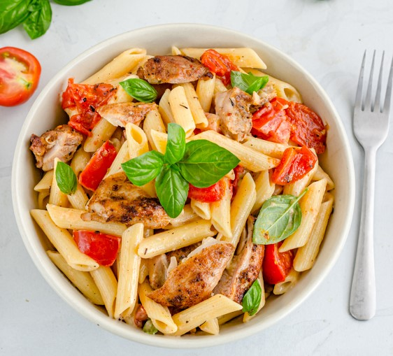

Tomato & Basil Chicken Pasta

Description:
This mouth-watering Italian dish takes only 40 minutes to prepare and can serve up to 2 people! Crispy chicken, fresh tomatoes and a touch of basil come together to create a delicious flavour that will leave you satisfied for hours!
Ingredients:
- Penne pasta (300g)
- Chicken thighs - skinless & boneless (500g)
- Tomatoes (4, medium-sized)
- Fresh basil leaves (1 cup)
- Onion (1, medium-sized)
- Olive oil (1 tbsp.)
- Water (3/4 cup)
Steps:
- Pour the water in a large pot, add the penne pasta, and boil for 10-12 minutes until fully cooked.
- Then, drain the pasta and set it aside.
- Heat a large frying pan over medium heat with a tablespoon of olive oil, and add the chicken thighs.
- Cook the chicken for 7 minutes on each side until they are fully cooked.
- Afterwards, remove the chicken from the pan, allow it to rest for 1-2 minutes, and slice it.
- In the same pan, add another tablespoon of olive oil and caramelize the diced onion for around 5 minutes.
- Next, add the tomato chunks and cook for another 5 minutes until softened.
- Add the sliced chicken and pasta back into the frying pan and mix everything together.
- Finally, add a cup of fresh basil leaves and stir it before serving hot.